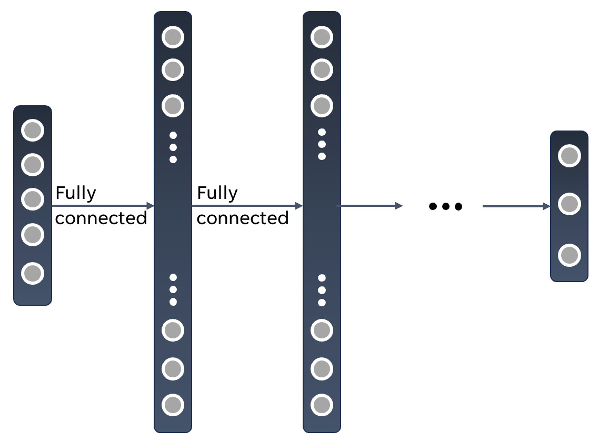
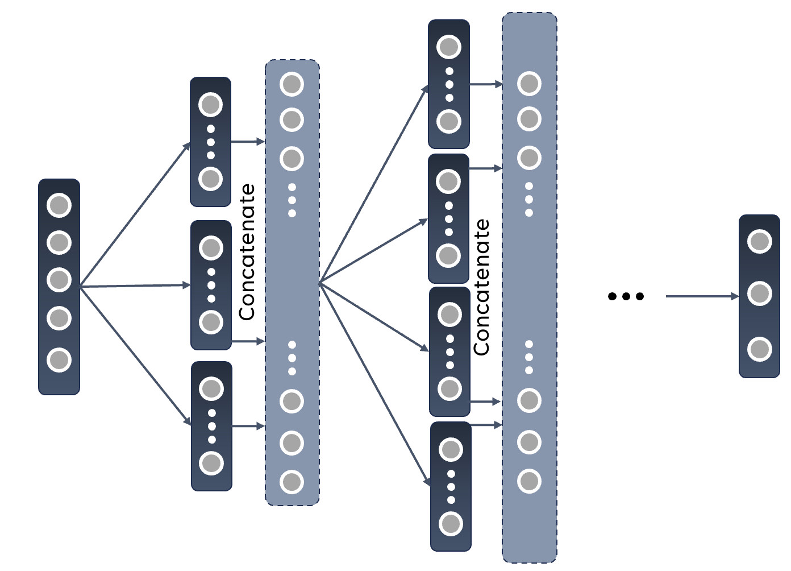

Partitioning of Feedforward SNNs
In this tutorial we will discuss network partitioning for feedforward networks on BrainScaleS-2 (BSS-2) [1].
We will create a spiking neural network (SNN) in hxtorch.snn [2] based on the output of a partitioning algorithm and train it with BSS-2 in-the-loop with the surrogate gradient (SG) method [3] to solve the MNIST [4] task.
This experiment has been published in [5].
If you are not familiar with hxtorch.snn or the BSS-2 system, you might want to do previous tutorials first or take a look at the following references.
This tutorial will not detail their corresponding working principles.
References and further reading
[1] Pehle, C., Billaudelle, S., Cramer, B., Kaiser, J., Schreiber, K., Stradmann, Y., Weis, J., Leibfried, A., Müller, E., and Schemmel, J. The BrainScaleS-2 accelerated neuromorphic system with hybrid plasticity. Frontiers in Neuroscience, 16, 2022. ISSN 1662-453X. doi: 10.3389/fnins.2022.795876
[2] Spilger, P., Arnold, E., Blessing, L., Mauch, C., Pehle, C., Müller, E., and Schemmel, J. hxtorch.snn: Machine- learning-inspired spiking neural network modeling on BrainScaleS-2. 2023. doi: 10.48550.2212.12210
[3] Emre O. Neftci, Hesham Mostafa, and Friedemann Zenke. 2019. Surrogate gradi- ent learning in spiking neural networks: Bringing the power of gradient-based optimization to spiking neural networks. IEEE Signal Processing Magazine 36, 6 (2019),51–63. https://doi.org/10.1109/MSP.2019.2931595
[4] Yann LeCun and Corinna Cortes. The MNIST database of handwritten digits. 1998.
[5] Arnold, E., Spilger, P., Straub, J. V., Müller, E., Dold, D., Meoni, G., Schemmel, J. Scalable Network Emulation on Analog Neuromorphic Hardware. Frontiers in Neuroscience. 2025. doi: 10.3389/fnins.2024.1523331
A Partitioning Algorithm
When working with feedforward neural networks, the typical network structure that arises will look like this:
{kind=link}
The marked regions represent layers of the network and the dots the neurons within them. We will work with an input layer, some hidden layers and an output layer with dense synaptic connections between the neurons of consecutive layers.
The BSS-2 System consists of 512 AdEx-neuron circuits with a fan-in of 256 individual synaptic connections to each of them. The weights of these synaptic connections can be either excitatory (positive) or inhibitory (negative) and can in each case be configured within 6 bit (inhibitory: \([-63, ..., 0]\), excitatory: \([0, ..., 63]\)). To work with signed weights, we can combine two synaptic rows, one for each input type. This, in return, reduces the fan-in per neuron circuit to 128. A higher fan-in can be achieved by connecting neuron circuits on BSS-2 such that they share their membrane voltage and add their respective fan-in. This decreases the number of available neurons on chip.
Networks requiring more neuron resources than the chip provides, need to be partitioned into subnetworks, each fitting on a single BSS-2 instance. As the neurons of any given layer are not interconnected and the information is propagated through the network in one direction only (feedforward), a postsynaptic layer can be split into multiple independent sublayers, each receiving all inputs from the presynaptic layer (in case of dense connections in between). Making use of this characteristic, we can turn this into a multi-step-process and run all the sublayers consecutively on the current single-chip BSS-2 hardware In the future, all parts are run in parallel on multi-chip hardware. After all the runs in a particular layer, we can combine their outputs and can move on to the next layer and then repeat the partitioning process The following image showcases this procedure:
{kind=link}
We will now try to find an optimal partition for a given network. Let’s say it consists of \(L \in\mathbb{N}\) layers with \(N_l \in\mathbb{N}\) neurons in layer \(l \leq L\). For the fully connected structure, every neuron in a following layer will have to be provided with a fan-in of the number of neurons in the previous layer (\(N_{ l-1 }\)). We can calculate how many neurons circuits \(c_l\) have to be connected in order to achieve this fan-in:
In the next step, we want to know how many neurons of this size fit on one chip:
Last but not least, this implies the number of necessary partitions for a given layer:
We can calculate this for each layer \(l\). If several consecutive layers do not need to be partitioned (\(p_l = p_{l+1} = … = p_{l+n} = 1\)), we can also check if these parts of the network can be executed in one hardware run, i.e. fit on the chip together.
Example with the MNIST data set
We are now going to implement an SNN in hxtorch.snn and put it to the test by training the resulting network on BSS-2.
Before we can actually train a network, a few more steps have to be considered.
In this example we will make use of the MNIST data set [4]. It contains \(28 \times 28\) gray scale images of the numbers from zero up to nine. The goal of our trained network will be to classify these images correctly. To do that, lets set the input space of the network to the image size: \(28 \times 28 = 784\) and use a hidden layer consisting of 256 leaky-integrate-and-fire (LIF) neurons. The 10 leaky integrators in our output layer correspond to the ten classes of the data set. For this network architecture, partitioning results in 5 subnetworks. The input space of \(784\) neurons requires connecting 7 neuron circuits; for convenience, we use 8, which simplifies the mapping process. This configuration reduces the number of “logical” neurons per BSS-2 chip to 64, so the hidden layer is divided into 4 partitions. In the output layer, 2 neuron circuits are connected, allowing the entire layer to be executed on a single BSS-2 instance.
Let’s load the data set before we continue with the encoding:
# set up hardware client
from _static.common.helpers import setup_hardware_client
setup_hardware_client()
import os
import torch
import torchvision
from torch.utils.data import DataLoader
from _static.tutorial.partitioning_helpers import RandomRandomRotation
torch.manual_seed(42)
batch_size = 100
dataset_size = 0.1
dev = torch.device("cuda" if torch.cuda.is_available() else "cpu")
print("device:", dev)
dataset_size = 0.01
batch_size = 32
# define the rotation that is applied
RotationTransform = RandomRandomRotation(dmin=-25, dmax=25, prob=0.5)
transform_train = torchvision.transforms.Compose(
[torchvision.transforms.ToTensor(), RotationTransform])
transform_test = torchvision.transforms.ToTensor()
# We either use existing MNIST dataset or download into "./mnist"
dataset_location = "/loh/data/mnist" if os.path.exists("/loh/data/mnist") else "./mnist"
train_data = torchvision.datasets.MNIST(
root=dataset_location, train=True, download=True, transform=transform_train)
test_data = torchvision.datasets.MNIST(
root=dataset_location, train=False, download=True, transform=transform_test)
# We only train on 10% of the data to increase execution speed
# ... comment this out if you want to train on the whole dataset
train_data = torch.utils.data.Subset(
train_data, torch.arange(int(len(train_data) * dataset_size)))
test_data = torch.utils.data.Subset(
test_data, torch.arange(int(len(test_data) * dataset_size)))
train_loader = DataLoader(train_data, batch_size=batch_size, shuffle=True)
test_loader = DataLoader(test_data, batch_size=batch_size)
As you can see, we can augment the data set by applying random rotations to some of the data to counteract overfitting. The probability with which these are applied and the angle range can be specified here.
Encoding
We have to encode the real valued input data into spike trains in order for the LIF neurons to be able to work with it. An efficient encoding approach is a time-to-first-spike (TTFS) encoding where each pixel is translated to single spike event. We will implement it a linear manner:
As hxtorch computes gradients by representing the network dynamics on a discrete time grid of length \(T\) time steps, each value of each pixel will be mapped to a discrete time-index \(t_{\text{idx}} \in\mathbb{N}\) along a spike train of length \(T \in\mathbb{N}\) at which a spike will be placed.
where \(x_{\text{ min/max }}\) is the minimum/maximum value of the data set. The mixed flooring and ceiling brackets indicate rounding to the next integer. With an encoding like this, high values are represented by early spikes and (while decreasing linearly) values close to \(x_{\text{min}}\) result in spike times near to \(T\).
def ttfs_encode(x: torch.Tensor, sequence_length: int, x_min: float = 0.,
x_max: float = 1.) -> torch.Tensor:
"""
Translate the image into a time-to-first-spike representation.
:param x: The image to encode into spikes.
:param sequence_length: The length of time sequence, i.e. number of time steps.
:param x_min: The minimum pixel value to still resulting in a spike.
:param x_max: The pixel value for which (and above) the spike time is at time step 0.
:return: The spiking representation of the image.
"""
indx = sequence_length - torch.round(
(sequence_length) * (x - x_min) / (x_max - x_min))
x_enc = torch.zeros([sequence_length] + list(x.shape), device=x.device)
for i in range(sequence_length):
x_enc[i] = torch.where(indx == i, 1, 0)
return x_enc
The full pre-processing of an image is shown in the following figure:
from functools import partial
from _static.tutorial.partitioning_plots import show_transforms
fig = show_transforms(train_data, RotationTransform, partial(
ttfs_encode, sequence_length=30))
Note that the image in the middle might be the same as the initial image, depending on the probability of the application given to RandomRandomRotation(..., ..., prob=...).
Decoding
As we chose leaky integrators in the last layer of the network, there will be no spiking behavior in this output layer.
We will have to apply some kind of decoding to the membrane traces that are being recorded on BSS-2 to turn them into class scores in order to infer a prediction.
A simple method to achieve this is a max-over-time decoding: the maximum value of each membrane trace will used to derive a probability for each class label.
For that we use the log-softmax function in conjunction with PyTorch’s torch.nn.functional.nll_loss, which corresponds to the Cross Entropy Loss.
def decode(x: torch.Tensor, trace_scaling: float = 1) -> torch.Tensor:
"""
Decode the output membrane traces into class scores.
:param x: Membrane traces from the output layer.
:param trace_scaling: Scaling factor for the traces.
:return: Log-probabilities for each class.
"""
x = torch.amax(x * trace_scaling, 0)
log_p_y = torch.nn.functional.log_softmax(x, dim=1)
return log_p_y
The Model
The class SNN creates a model in a similar fashion to the known PyTorch formulation.
It defines the projections and neuron layers of the network.
In the forward-method, an input is traversed through the network and the respective output is returned.
The class Model puts together what we already have and creates a complete model with encoder, network and decoder.
It even consists of a regularization method that might come in handy later on.
When creating the synapses, the parameter transforms allows us to apply a function to the weights before they are used in the networks calculations.
To ensure compatibility with the physical constraints of BSS-2, we apply a weight saturation function that limits weights to the hardware boundaries.
Additionally, in the Synapse module’s numerical implementation (see forward_func), we use a clamping function with exponential decay near the extreme values (\(-63\) and \(63\)).
This approach prevents weight over-saturation and helps maintain consistency between software and hardware weights.
import hxtorch
import hxtorch.spiking as hxsnn
import hxtorch.spiking.functional as F
from hxtorch.spiking.transforms import weight_transforms
from typing import Optional, Tuple
class Synapse(hxsnn.Synapse):
def __init__(self, *args, cap: float, weight_exp_rolloff: float,
use_quantization: bool, **kwargs):
"""
Initialize the Synapse.
:param use_quantization: Whether to use quantized weights in the numerical
forwardpass.
:param cap: Maximum allowed weight value for the model weights (saturation cap).
:param weight_exp_rolloff: Start of exponential rolloff for weights towards
saturation cap.
:param args: Additional positional arguments for parent class.
:param kwargs: Additional keyword arguments for parent class.
"""
super().__init__(*args, **kwargs)
self.cap = cap
self.weight_exp_rolloff = weight_exp_rolloff
self.use_quantization = use_quantization
def forward_func(self, inputs: hxsnn.LIFObservables) -> hxsnn.SynapseHandle:
return hxsnn.SynapseHandle(
graded_spikes=F.linear_exponential_clamp(
inputs.spikes, self.weight, cap=self.cap, start_weight=self.weight_exp_rolloff,
quantize=self.use_quantization))
class SNN(torch.nn.Module):
"""
SNN consiting of a hidden LIF layer and subseqent LI output layer
"""
def __init__(
self,
lif_params: dict,
li_params: dict,
mock: bool = True,
dt: float = 1.0e-6,
use_quantization: bool = True,
trace_shift_hidden: int = 1,
trace_shift_out: int = 1,
weight_init_hidden: Optional[Tuple[float, float]] = None,
weight_init_output: Optional[Tuple[float, float]] = None,
weight_scale_hidden: float = 1.,
weight_scale_output: float = 1.,
trace_scale_hidden: float = 1.,
trace_scale_output: float = 1.,
weight_exp_rolloff: float = 0.,
device: torch.device = torch.device("cpu")) -> None:
"""
Initialize the SNN.
:param lif_params: Params for LIF neurons. Also used for calibration.
:param li_params: Params for LI neurons. Also used for calibration.
:param mock: Indicating whether to train in software or on
:param dt: Time-binning width.
:param use_quantization: Wether to use discrete weights in
simulation forward.
:param weight_init_hidden: Weight initialization mean
and standard deviation.
:param weight_init_output: Output layer weight initialization mean
and standard deviation.
:param weight_scale_hidden: The factor with which the hidden
software weights are scaled when mapped to hardware.
:param weight_scale_output: The factor with which the output
software weights are scaled when mapped to hardware.
:param trace_scale_hidden: The factor with which the membrane
traces of the hidden neurons are scaled when mapped from
hardware measurements to software.
:param trace_scale_output: The factor with which the membrane
traces of the readout neurons are scaled when mapped from
hardware measurements to software.
:param weight_exp_rolloff: Weights with higher absolutes are rolled off
exponentially in software.
:param device: The used PyTorch device used for tensor operations
in software.
"""
super().__init__()
self.exp = hxsnn.Experiment(mock=mock, dt=dt)
self.exp.inter_batch_entry_wait = 125 * 50 # 50 us
morph_hidden = hxsnn.morphology.SingleCompartmentNeuron(
size=8, expand_horizontally=False)
# Hidden Layers
self.hidden_size = 256
self.linear_hidden, neurons_hidden = [], []
for i in range(4):
inst = hxsnn.ExecutionInstance()
linear = Synapse(
in_features=784,
out_features=64,
experiment=self.exp,
execution_instance=inst,
cap=1. if mock else 63. / weight_scale_hidden,
weight_exp_rolloff=weight_exp_rolloff,
use_quantization=use_quantization,
transform=partial(
weight_transforms.linear_saturating,
scale=weight_scale_hidden))
self.linear_hidden.append(linear)
setattr(self, f"linear_hidden_{i}", linear)
neuron = hxsnn.LIF(
size=64,
**lif_params,
experiment=self.exp,
execution_instance=inst,
trace_scale=trace_scale_hidden,
cadc_time_shift=trace_shift_hidden,
shift_cadc_to_first=True,
neuron_structure=morph_hidden)
setattr(self, f"neuron_hidden_{i}", neuron)
neurons_hidden.append(neuron)
# Output Layer
morph_out = hxsnn.morphology.SingleCompartmentNeuron(
size=2, expand_horizontally = False)
inst = hxsnn.ExecutionInstance()
self.linear_output = []
for i in range(4):
linear = Synapse(
in_features=64,
out_features=10,
execution_instance=inst,
experiment=self.exp,
cap=1. if mock else 63. / weight_scale_output,
weight_exp_rolloff=weight_exp_rolloff,
use_quantization=use_quantization,
transform=partial(
weight_transforms.linear_saturating,
scale=weight_scale_output))
self.linear_output.append(linear)
setattr(self, f"linear_output_{i}", linear)
self.neuron_output = hxsnn.LI(
size=10,
**li_params,
experiment=self.exp,
execution_instance=inst,
trace_scale=trace_scale_output,
cadc_time_shift=trace_shift_out,
shift_cadc_to_first=True,
neuron_structure=morph_out)
# initialize weights
for i, linear in enumerate(self.linear_hidden):
torch.nn.init.normal_(linear.weight.data, *weight_init_hidden)
for i, linear in enumerate(self.linear_output):
torch.nn.init.normal_(linear.weight.data, *weight_init_output)
# Device
self.device = device
self.to(device)
# placeholder for (hidden) spikes
self.spikes = []
# placeholder for current encoded inputs and output traces
self.encoded_input = None
self.traces = []
def forward(self, spikes: torch.Tensor) -> torch.Tensor:
"""
Perform a forward path.
:param spikes: LIFObservables holding spikes as input.
:return: Returns the output of the network, i.e. membrane traces of
the readout neurons.
"""
# clear spike list and traces list for each iteration
self.spikes = []
self.traces = []
# Spike input
inputs = spikes.view(spikes.shape[0], spikes.shape[1], -1)
# Input -> hidden
g1 = self.linear_hidden_0(hxsnn.LIFObservables(spikes=inputs))
s1 = self.neuron_hidden_0(g1)
g2 = self.linear_hidden_1(hxsnn.LIFObservables(spikes=inputs))
s2 = self.neuron_hidden_1(g2)
g3 = self.linear_hidden_2(hxsnn.LIFObservables(spikes=inputs))
s3 = self.neuron_hidden_2(g3)
g4 = self.linear_hidden_3(hxsnn.LIFObservables(spikes=inputs))
s4 = self.neuron_hidden_3(g4)
# Hidden -> output
g5 = self.linear_output_0(s1)
g6 = self.linear_output_1(s2)
g7 = self.linear_output_2(s3)
g8 = self.linear_output_3(s4)
y = self.neuron_output(g5)
y = self.neuron_output(g6)
y = self.neuron_output(g7)
y = self.neuron_output(g8)
# runtime 2 µs seconds longer for buffer
hxsnn.run(self.exp, inputs.shape[0] + 2)
# Concat tensors of partitioned hidden layer
s_h = [s1, s2, s3, s4]
hidden_traces = torch.cat([s_h[i].membrane_cadc for i in range(4)], 2)
hidden_spikes = torch.cat([s_h[i].spikes for i in range(4)], 2)
self.traces = [hidden_traces] + [y.membrane_cadc]
self.spikes = [hidden_spikes]
return self.traces[-1]
def get_proj_attrs(self):
return self.proj_attrs
def get_rate(self): # spikes per input per neuron
"""
Calculates (and returns) the rate at which neurons fire.
:returns: Firing rate per neuron and input image for all spiking
neurons in the network.
"""
rate = torch.tensor(0.)
batch_size = self.spikes[0].shape[1]
for spikes in self.spikes:
rate += spikes.sum() / batch_size / self.hidden_size
return rate
class Model(torch.nn.Module):
""" Complete model with encoder, network (snn) and decoder """
def __init__(self, encoder: torch.nn.Module,
network: torch.nn.Module,
decoder: torch.nn.Module) -> None:
"""
Initialize the model by assigning encoder, network and decoder
:param encoder: Module to encode input data
:param network: Network module containing layers and
parameters / weights
:param decoder: Module to decode network output
"""
super().__init__()
self.encoder = encoder
self.network = network
self.decoder = decoder
def forward(self, inputs: torch.Tensor) -> torch.Tensor:
"""
Perform forward pass through whole model, i.e.
data -> encoder -> network -> decoder -> output
:param inputs: tensor input data
:returns: Returns tensor output
"""
spikes = self.encoder(inputs)
traces = self.network(spikes)
self.scores = self.decoder(traces).clone()
return self.scores
def regularize(self, reg_readout: float = 0, reg_bursts: float = 0,
reg_w_hidden: float = 0, reg_w_output: float = 0,
exponent: int = 2) -> torch.Tensor:
"""
Compute regularization loss for spiking activity, magnitude of
weights and magnitude of max-over-time values.
:param reg_bursts: prefactor of burst / hidden spike regulaization
:param reg_weights_hidden: prefactor of hidden weight regularization
:param reg_weights_output: prefactor of output weight regularization
:param exponent: exponent in regularization terms
:returns: Returns regularization terms in a tensor and their sum
"""
reg = torch.tensor(0., device=self.scores.device)
# Reg readout
reg_scores = reg_readout * torch.mean(self.scores ** exponent)
reg += reg_scores
# bursts (hidden spikes) regularization
reg_spikes = torch.tensor(0., device=self.scores.device)
for spikes in self.network.spikes:
reg_spikes += reg_bursts * torch.mean(
torch.sum(spikes, dim=0) ** exponent)
reg += reg_spikes
# weight regularization
reg_weight = torch.tensor(0., device=self.scores.device)
for linear in self.network.linear_hidden:
reg_weight += reg_w_hidden * \
torch.mean(linear.weight ** exponent)
for linear in self.network.linear_output:
reg_weight += reg_w_output * \
torch.mean(linear.weight ** exponent)
reg += reg_weight
return reg, torch.tensor(
[reg_scores.item(), reg_spikes.item(), reg_weight.item()])
def get_rate(self):
"""
Calculates (and returns) the rate at which neurons fire.
:returns: Firing rate per neuron and input image for all spiking
neurons in the network.
"""
return self.network.get_rate()
Calibrations and Parameters
Before we set up the training functions for our model, lets take a step back and realize that the neuron parameters that are set in the model above have to be calibrated on hardware - if we are not using the mock-mode. We will just have to set some parameters and the BSS-2 system will be calibrated implicitly. Changing neuron parameters like the leak or threshold potential requires recalibration which takes some minutes. Parameterizing neurons on BSS-2 is discussed in more detail in the tutorials BrainScaleS-2 single neuron experiments and hxtorch.snn Introduction.
from hxtorch.snn.parameter import HXParameter, MixedHXModelParameter
# Neuron parameters
lif_params = {
"tau_syn": HXParameter(5.7e-6),
"tau_mem": HXParameter(6e-6),
"leak": MixedHXModelParameter(0., 80),
"reset": MixedHXModelParameter(0., 80),
"threshold": MixedHXModelParameter(1., 120),
"alpha": 50
}
li_params = {
"tau_syn": HXParameter(5.7e-6),
"tau_mem": HXParameter(6e-6),
"leak": MixedHXModelParameter(0., 80),
"reset": MixedHXModelParameter(0., 80),
"threshold": MixedHXModelParameter(1., 120),
"alpha": 50
}
# Simulation
mock = False
weight_scale = 1.
trace_scale = 1.
# Regularization parameters
reg_bursts = 0.0025
reg_weights_hidden = 0.0033
reg_readout = 1.6e-4
reg_weights_output = 0.0033
reg_gamma = 0.985
reg_step_size = 1
# Training parameters
epochs = 100
lr = 0.002
epochs = 2
You might also return to these parameters later and choose different regularization values.
Training and Testing
We will now set up the training and testing methods for any model that we might choose. The loss function will consist of the cross-entropy loss as well as the regularization terms.
from typing import Callable
def run_epoch(model: torch.nn.Module, loader: DataLoader,
optimizer: torch.optim.Optimizer, epoch: int, train: bool,
update_func: Callable) -> Tuple[float, float]:
"""
Perform training or testing for one epoch.
:param model: The model to train/test.
:param loader: Pytorch DataLoader instance providing training/testing
data.
:param optimizer: The optimizer used for weight optimization.
:param epoch: Current epoch for logging.
:param train: Bool indicating whether we train or evaluate the model.
:update_func: A function to track data for plotting.
:returns: Tuple (loss, accuracy, mean rate)
"""
# define loss function
loss_func = torch.nn.functional.nll_loss
model.train(mode=train) # sets model in training / eval mode
dev = model.network.device
total_loss, total_reg_loss, total_acc, total_rate = [], [], [], []
pbar = tqdm(total=len(loader), unit="batch", leave=False)
for data, target in loader:
if train:
optimizer.zero_grad()
scores = model(data.to(dev))
# compute regularization loss and add up
reg_loss_b, _ = model.regularize(
reg_readout, reg_bursts * reg_gamma **\
((int)((epoch - 1) / reg_step_size)),
reg_weights_hidden, reg_weights_output, exponent=4)
total_reg_loss.append(reg_loss_b.detach().flatten())
# compute total loss
loss = loss_func(scores, target.to(dev)) + reg_loss_b
total_loss.append(loss.detach().flatten())
if train: # backpropagation
loss.backward()
optimizer.step()
# Train accuracy
pred = scores.cpu().argmax(dim=1)
acc = pred.eq(target.view_as(pred)).float()
total_acc.append(acc.detach().flatten())
# Firing rates
rate = model.get_rate()
total_rate.append(rate.detach().flatten())
pbar.set_postfix(
loss=f"{loss.mean().item():.3f}", loss_reg=f"{reg_loss_b.mean().item():.3f}",
acc=f"{(acc.mean().item() * 100):.0f}%", rate=f"{rate}")
pbar.update()
pbar.close()
total_loss = torch.cat(total_loss).mean().cpu()
total_acc = torch.cat(total_acc).mean().cpu()
total_rate = torch.cat(total_rate).mean().cpu()
total_reg_loss = torch.cat(total_reg_loss).mean().cpu()
# Update data for plotting
update_func(loss=total_loss, acc=total_acc, rate=total_rate)
print(f"Train: {train}, Epoch {epoch}, Loss {total_loss:.4f}, Accuracy {total_acc:.4f}")
return total_loss, total_acc, total_rate, total_reg_loss
Final Setup And The Training Loop
We can now approach the final setup for our training.
For the mapping between the hardware measurements and the software simulation, we will initiate a calibration and measure the scaling of the weights and traces.
This is necessary as we assume threshold = 1 and leak, reset = 0 in software.
To ensure a correspondance between the gradient in software and the neural dynamics on hardware, a transformation of the software weights to hardware weights and a transformation of membrane observables on hardware to membrane traces in software need to be found (therefore: get_weight_scaling(...)).
The mapping between hardware dynamics and the dynamics assumed for computing gradients in explained and visualized in hxtorch.snn Introduction.
The calibration might take a while so feel free to read on until it is finished.
from hxtorch.spiking.utils.dynamic_range.weight_scaling import get_weight_scaling
from hxtorch.spiking.utils.dynamic_range.threshold import get_trace_scaling
hxtorch.logger.set_loglevel(
hxtorch.logger.get("grenade"), hxtorch.logger.LogLevel.ERROR)
if not mock:
# Measure weight scaling SW - HW weight
weight_scale_hidden = get_weight_scaling(
lif_params, weight_step=10,
neuron_structure=hxsnn.morphology.SingleCompartmentNeuron(
size=8, expand_horizontally=False))
weight_scale_output = get_weight_scaling(
lif_params, weight_step=10,
neuron_structure=hxsnn.morphology.SingleCompartmentNeuron(
size=2, expand_horizontally=False))
print(f"Weight scale hidden {weight_scale_hidden}, "
+ f"weight scale out {weight_scale_output}.")
# Measure trace scaling SW - HW
trace_scale_hidden = get_trace_scaling(
lif_params, neuron_structure=hxsnn.morphology.SingleCompartmentNeuron(
size=8, expand_horizontally=False)).item()
trace_scale_output = get_trace_scaling(
lif_params, neuron_structure=hxsnn.morphology.SingleCompartmentNeuron(
size=2, expand_horizontally=False)).item()
print(f"Trace scale hidden {trace_scale_hidden}, "
+ f"trace scale out {trace_scale_output}.")
import matplotlib.pyplot as plt
%matplotlib inline
import ipywidgets as w
from _static.tutorial.partitioning_plots import plot_training
model = Model(
partial(ttfs_encode, sequence_length=30),
SNN(lif_params=lif_params,
li_params=li_params,
mock=mock,
dt=1e-6,
weight_init_hidden=(-0.05, 0.2),
weight_init_output=(0.01, 0.2),
weight_scale_hidden=weight_scale_hidden,
weight_scale_output=weight_scale_output,
trace_scale_hidden=trace_scale_hidden,
trace_scale_output=trace_scale_output,
device=dev),
partial(decode, trace_scaling=3.))
optimizer = torch.optim.Adam(model.parameters(), lr=lr)
scheduler = torch.optim.lr_scheduler.StepLR(
optimizer, step_size=1, gamma=0.97)
The Training Loop
import matplotlib.pyplot as plt
%matplotlib inline
import ipywidgets as w
from tqdm.auto import tqdm
from _static.tutorial.partitioning_plots import plot_training
# initialize hardware
hxtorch.init_hardware()
# plotting during training
update_plot, update_train_data, update_test_data = plot_training(epochs)
plt.close()
output = w.Output()
display(output)
with output:
update_plot()
pbar = tqdm(total=epochs, unit="epoch")
for epoch in range(1, epochs + 1):
loss_train, acc_train, rate_train, regs_train = run_epoch(
model, train_loader, optimizer, epoch, True, update_train_data)
loss_test, acc_test, rate_test, regs_test = run_epoch(
model, test_loader, optimizer, epoch, False, update_test_data)
scheduler.step()
# Refresh plot
output.clear_output(wait=True)
with output:
update_plot()
pbar.set_postfix(
loss_test=f"{loss_test:.4f}", acc_test=f"{acc_test:.4f}")
pbar.update()
pbar.close()
hxtorch.release_hardware()